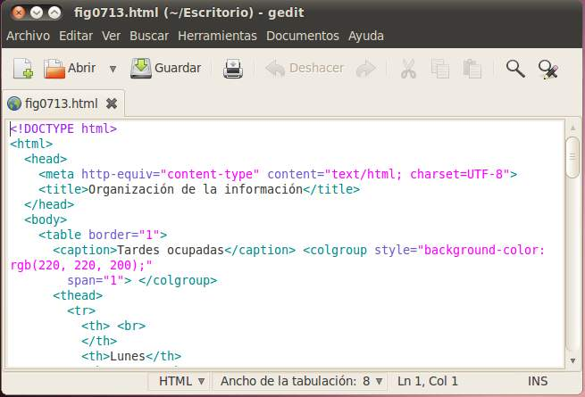

Los archivos, que diseñaremos al crear un espacio web, no son más que archivos de texto sencillos, por lo que sólo nos hará falta un programa de edición de textos planos y un navegador web para ver la apariencia que va tomando nuestra página web.
Hay multitud de editores libres y gratuitos que podemos emplear, incluso los editores predeterminados de cada sistema operativo son una buena opción, como el "Editor de Texto" en sistemas operativos Linux o el propio "Bloc de notas" Windows.
Tomando esto como punto de partida, no nos resultará difícil encontrar editores de texto algo más completos que nos simplificarán nuestro trabajo. Así, por ejemplo, al crear una página con el editor estándar de un sistema Linux, observaremos que de forma automática destaca las etiquetas, simplificándose notablemente la creación de páginas web. La figura muestra un ejemplo.

Ésta es tan sólo la ayuda más simple que nos puede proporcionar un editor, ya que normalmente emplearemos alguno que hasta nos permitirá editar la página sin necesidad de escribir las etiquetas manualmente, proporcionándonos una representación visual del aspecto que tomará la página web.